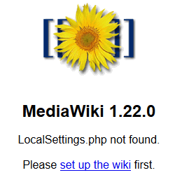
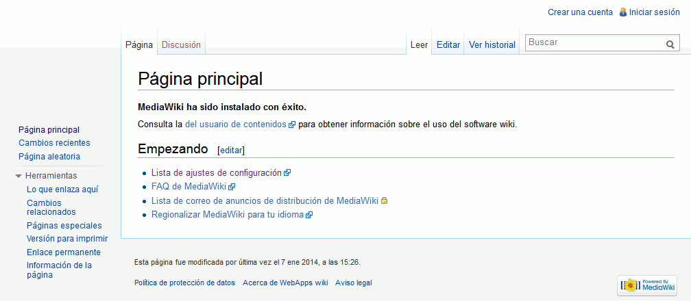

Estos ejercicios corresponden a una versión antigua de MediaWiki. No están actualizados a versiones más actuales porque desde el curso 2014/15 no estoy trabajando en clase MediaWiki ya que estoy dedicando más tiempo a otras aplicaciones. He mantenido estos ejercicios en los apuntes por si le pueden servir a alguien.
En esta lección se proponen ejercicios para conocer y utilizar MediaWiki. Se pueden consultar las soluciones de estos ejercicios de MediaWiki, aunque se recomienda intentar realizarlos primero sin recurrir a estas soluciones.
Wikis: MediaWiki
Un wiki o una wiki (del hawaiano wiki, que significa "rápido") es un sitio web cuyas páginas pueden ser visitadas y editadas libremente mediante el navegador web.
La primera wiki, llamada WikiWikiWeb, fue creada por Ward Cunningham en 1995, que dió nombre a este tipo de sitios. La wiki más conocida es seguramente la Wikipedia una enciclopedia libre puesta en marcha por Jimmy Wales y Larry Sanger en 2001. La versión más importante de Wikipedia es lógicamente la versión en inglés, pero la versión en español se encuentra entre las diez primeras. La Wikipedia utiliza su propio software llamado MediaWiki, escrito en PHP.
MediaWiki (1) 1 - Descargar MediaWiki
Visite la página web del proyecto MediaWiki.
Descargue la versión MediaWiki 1.22.0 (con todos los idiomas), publicada el 6 de diciembre de 2013. Se recomienda esa versión ya que estos ejercicios se han preparado para ella.
Si la versión MediaWiki 1.22.0 ya no está disponible en la web del programa, puede descargarla desde la página de Descarga de aplicaciones antiguas.
MediaWiki (1) 2 - Instalar MediaWiki
En este apartado se trata de poner en marcha una wiki en MediaWiki:
Cree con phpMyAdmin un usuario de MySQL con nombre iaw_mediawiki_1, contraseña iaw_mediawiki_1 y base de datos iaw_mediawiki_1.
Descomprima MediaWiki en la carpeta adecuada para poder ejecutarlo en el servidor local.
Abra mediawiki/index.php en Eclipse. MediaWiki detecta que no existe el archivo de configuración LocalSettings.php y que es necesario utilizar el asistente de instalación.

El asistente de instalación va preguntando las opciones de configuración deseadas. A continuación se comentan las opciones a elegir distintas de las predeterminadas.
Idioma
Idioma: español
Conectar a la base de datos
Base de datos a utilizar: MySQL
Servidor de la base de datos: localhost
Nombre de base de datos: iaw_mediawiki_1
Nombre de usuario de base de datos: iaw_mediawiki_1
Contraseña de base de datos: iaw_mediawiki_1
Nombre
Nombre del wiki: WebApps wiki
Nombre del administrador: admin
Contraseña del administrador: adminadmin (por seguridad, la contraseña no puede coincidir con el nombre)
Elegir Ya estoy aburrido, sólo instala el wiki.
Abrir la página principal de la wiki.

MediaWiki (1) 3 - Crear una nueva página
Para crear una página nueva en la wiki, se puede:
hacer una búsqueda de la página que se quiere crear y al no encontrarse la página correspondiente, MediaWiki ofrece la posibilidad de crearla.
escribir su dirección en el navegador (por ejemplo http:// ... /index.php/Nombre_de_la_nueva_página) y cuando informe que esa página no existe, hacer clic en el enlace editar esta página para crearla.
crear en alguna página ya existente un enlace a la nueva página (por ejemplo [[Nombre de la nueva página]]) y hacer clic en el enlace.
Cree tres páginas utilizando cada uno de estos métodos de creación de página. El contenido puede ser una frase cualquiera, pero las páginas se llamarán:
Mi primera página
Mi segunda página
Mi cuarta página (Nota: no es un error, este nombre se cambiará en el ejercicio siguiente)
MediaWiki (1) 4 - Cambiar de nombre (trasladar) una página
Para MediaWiki, cambiar de nombre una página es lo mismo que "trasladar" esa página.
Cambie el nombre de la página "Mi cuarta página" a "Mi tercera página".
MediaWiki (1) 5 - Borrar una página
Borre la página "Mi tercera página".
MediaWiki (1) 6 - Editar una página
En las páginas "Mi primera página" y "Mi segunda página" cree contenido, probando el marcado de MediaWiki (texto, listas, enlaces, firmas, etc.).
Para dar formato al contenido, MediaWiki utiliza unas marcas especiales que se comentan en la página Marcado de MediaWiki.
MediaWiki (1) 7 - Crear usuarios
Cree un usuario distinto al administrador (por ejemplo, el usuario Numa Nigerio).
Compruebe que puede editar páginas con el nuevo usuario. Crear su página de usuario.
MediaWiki (1) 8 - Subir imágenes
Modifique la variable adecuada en LocalSettings.php para que se puedan subir imágenes a la wiki.
Suba imágenes PNG o JPG e inclúyalas en las páginas, probando las diferentes opciones de formato.
MediaWiki (1) 9 - Varios
En este apartado, se trata de buscar información sobre estas posibilidades de MediaWiki y probarlas.
Redirecciones
En MediaWiki una página puede redirigir a otra.
Cree un par de páginas de manera que una redirija a la otra (por ejemplo, una que se llame automóvil y otra que se llame coche que redirija a la primera).
Cree varias páginas y defina categorías y asigne categorías a las páginas (por ejemplo, categorías de mamíferos, peces y aves y páginas de esos tipos de animales).
MediaWiki (1) 10 - Acceder desde otros ordenadores
Intentar acceder a la wiki desde otras otras máquinas (desde otros ordenadores pertenecientes a la misma red o desde una máquina virtual en el mismo ordenador) incluyendo en la dirección la IP del servidor (es decir, en vez de http://localhost/NombreAlumno/iwb/aplicaciones/mediawiki/, escribiendo http://AAA.BBB.CCC.DDD/wiki/, siendo AAA.BBB.CCC.DDD la IP del propio ordenador).
Observar que no es posible acceder a la wiki.
Corregir este problema corrigiendo la variable adecuada en LocalSettings.php.